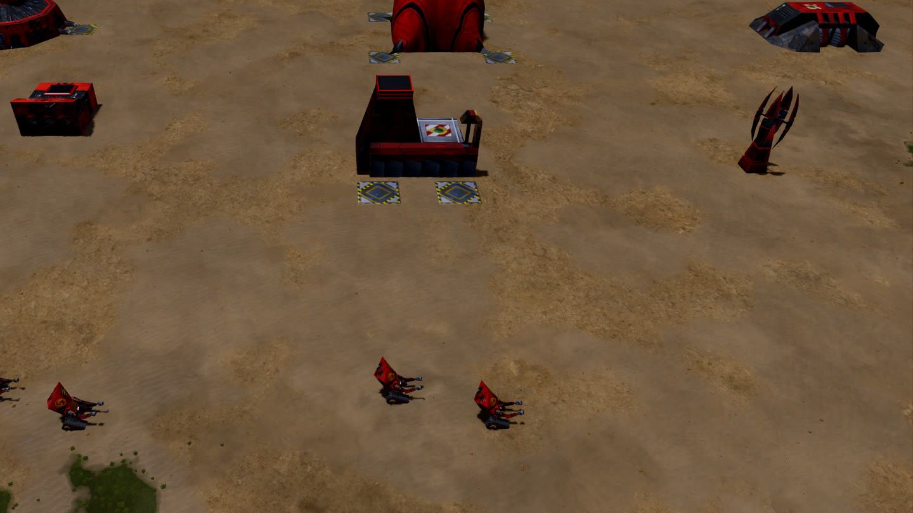
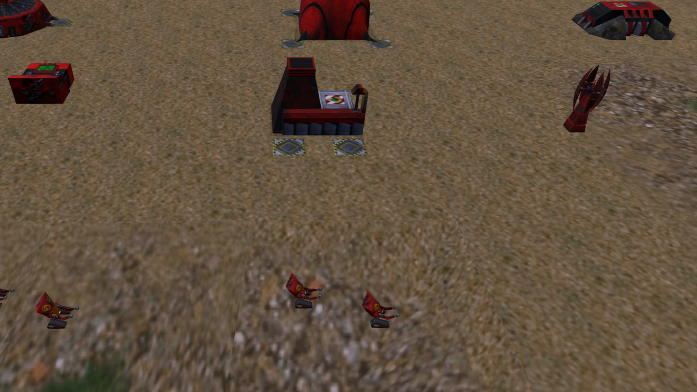
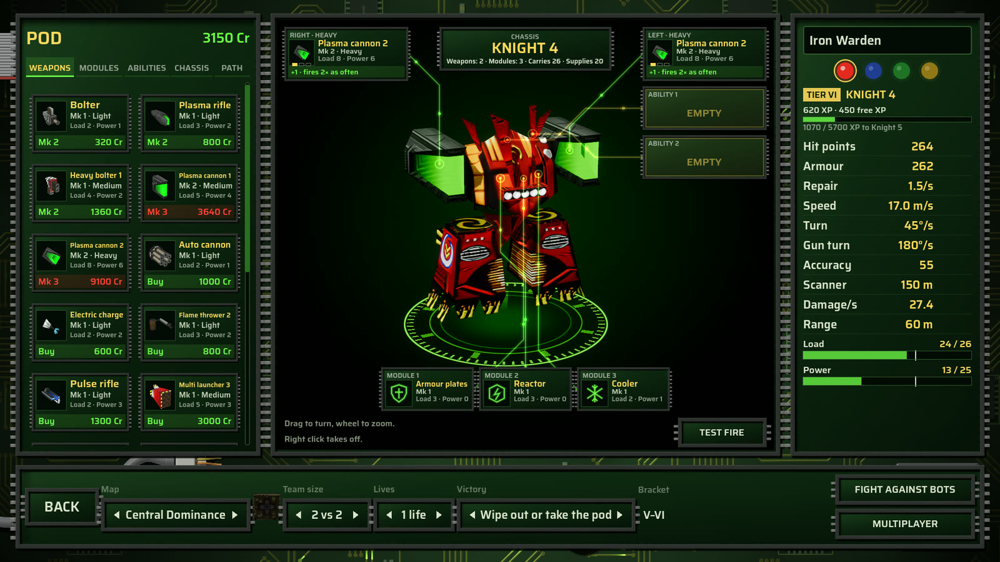
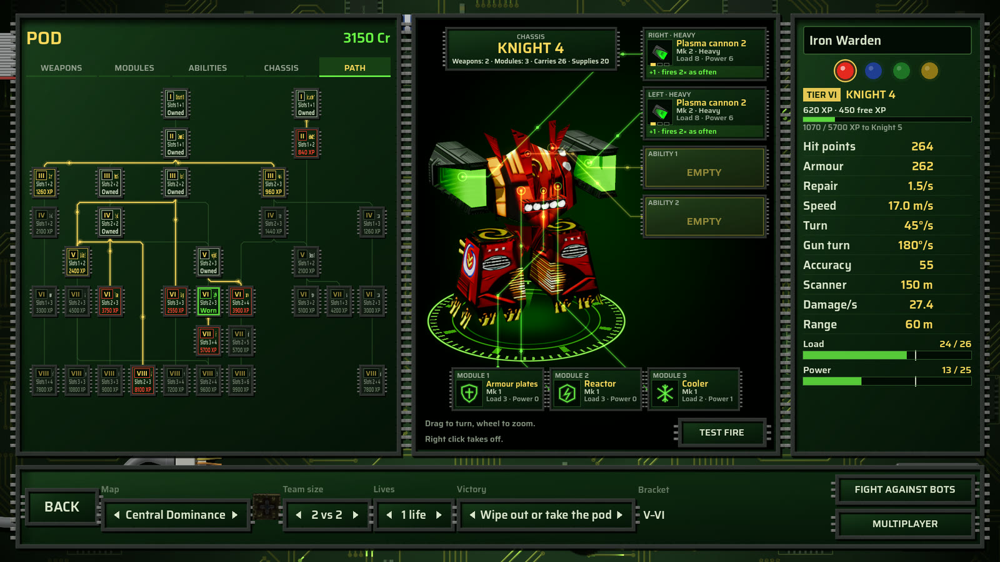

Test build · latest
Machines: Wired for War, rebuilt.
A fan remake of the 1999 real-time strategy game, made from the ground up in Godot 4. Command from above or drive any machine yourself, alone, against the AI or online.
A fan remake of the 1999 real-time strategy game, made from the ground up in Godot 4. Command from above or drive any machine yourself, alone, against the AI or online.
Recorded in the game in the Overhauled look, to the original's intro music.
Get the setup for Windows 10 or 11 (64-bit) above.
Run it. No administrator rights needed. If Windows warns about an unknown publisher: More info, then Run anyway.
Put CD 1 in the drive, or keep its disc image (.iso) in Downloads, or have the game installed: the first start finds it, press Import. It takes a few minutes.


Classic OverhauledThe same moment of the same match in both looks: the original's tiles beside the painted ground, with the remake's light. Drag the line to compare.

Pick a chassis, drag weapons, modules and abilities onto its slots, choose a name and a colour.

Earn experience in battle to research the next chassis, through eight tiers.
Open Multiplayer, type a name and press Connect: the public relay is already set, so nobody has to open a port. Join a room or open one. Everyone needs the same version.